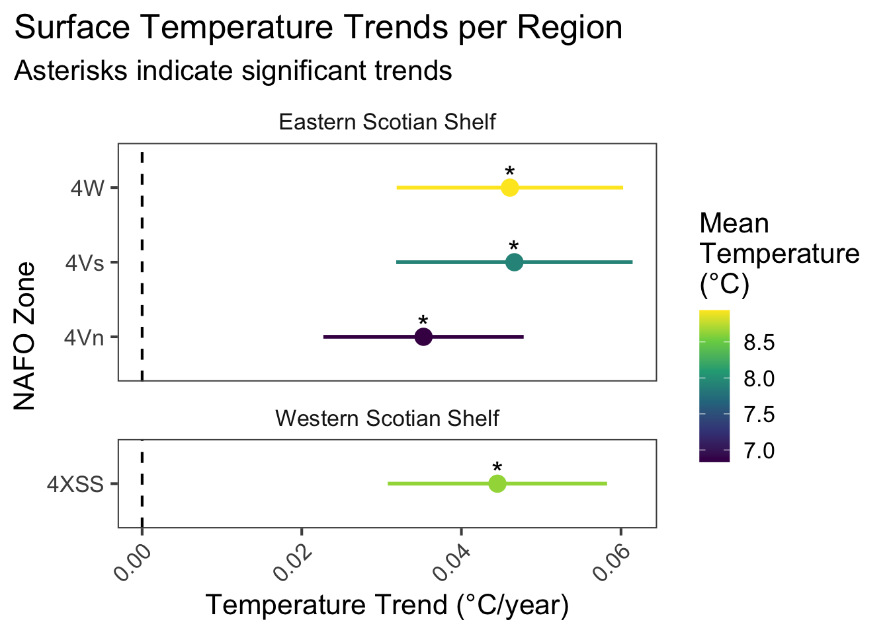

3 Surface Temperature from Satellite Data (AZMP)
Data Type: Tabular Data
Spatial Scope: Scotian Shelf (4X, 4V, 4W)
Duration 1982-2024
Source: DFO Atlantic Zone Monitoring Program via azmpdata
3.1 Introduction to Indicator
Sea surface temperature from satellite data refers to continuous sea surface temperature (SST) fields derived from satellite sensors, representing the temperature of the ocean’s surface. Here, continuous fields are summarized within non-mutually exclusive regions representing NAFO zones or subzone divisions.
Sea surface temperature is influenced by a variety of conditions spanning multiple spatial and temporal scales. In this region, long-term trends in SST are consistent with expectations of anthropogenic climate change (Greenan et al. 2019). At the same time, decadal-to-interannual regional SST trends are influenced by atmospheric indicators like those described in this book, and short-term local values can be influenced by many oceanographic and climate factors, such as freshwater input, ocean currents, and weather events.
3.3 Trends
Surface temperatures are less variable across the region compared to bottom temperature. Among regions in this dataset, mean surface temperatures range from 8.94 in 4W to 6.83 in 4Vn. 1 regions had their highest temperature values within the last 10 years of sampling (2014-2024), and 0 had their lowest value (Fig. 3.1.
In the most recent year of sampling (2024), 4 regions had values that are high compared to their overall timeseries (>70th percentile), 0 regions had values that were moderate (between 30th and 70th percentile), and 0 regions had low values (<30th percentile) within their timeseries.

Figure 3.2: Coefficients of satellite surface temperature trends over time for NAFO zones within Eastern and Western Scotian Shelf regions.
The overall trend is increasing across regions. 4 regional subdivisions have increasing Bottom Temperature trends (all of which are statistically significant) and 0 have negative trends (Fig 3.2).
(#fig:plot-trends-azmp_satellite_temperature-map)Map of target study areas colored by mean satellite surface temperature (left) and warming trend over time (right).
3.3.1 Summary Table by Region
| Metric | Eastern Scotian Shelf | Western Scotian Shelf |
|---|---|---|
| Mean Value |
4Vn: 6.83°C 4Vs: 7.91°C 4W: 8.94°C |
4XSS: 8.63°C |
| Warming Trend |
4Vn: 0.035°C/year * 4Vs: 0.047°C/year * 4W: 0.046°C/year * |
4XSS: 0.045°C/year * |
| Hottest Year |
4Vn: 2024 (8.29°C) 4Vs: 2012 (9.5°C) 4W: 2012 (10.55°C) |
4XSS: 2012 (10.43°C) |
| Coldest Year |
4Vn: 1985 (5.6°C) 4Vs: 1985 (6.05°C) 4W: 1986 (7.46°C) |
4XSS: 1988 (7.13°C) |
3.4 Relevance to Research and Stock Assessments
Changes to sea surface temperature could have great impact on fisheries and stocks from both direct and indirect effects.
Sea surface temperatures can directly impact fisheries via changes to the distribution and phenology of key fisheries species (Hutchings et al. 2012). These changes are likely to result in the loss or decline of some commercially important species, but also the gain or increase of others. Atlantic Canada is projected to experience decreases in species and maximum catch in the Scotian Shelf and surrounding bioregions, but projected gains towards the Arctic (Cheung et al. 2010). These changes are consistent with expected poleward shifts if species track climatic envelopes towards the poles. Changes to surface temperature might also affect phenological process of key species, including spawning times and predator/prey encounters.
Sea surface temperatures can also affect the physical and chemical properties of marine ecosystems, in turn, affecting species. Warming and freshening of surface waters can lead to increased stratification in coastal oceans, influencing primary productivity and nutrient cycling.
3.5 Variable Definitions
| variable | description | unit |
|---|---|---|
| year | Year of data collection | |
| region | NAFO region or subregion | |
| mean_value | Regionally summarized sea surface temperature, derived from satellite data | °C |